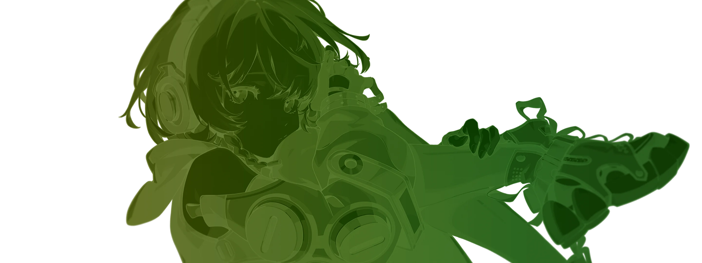
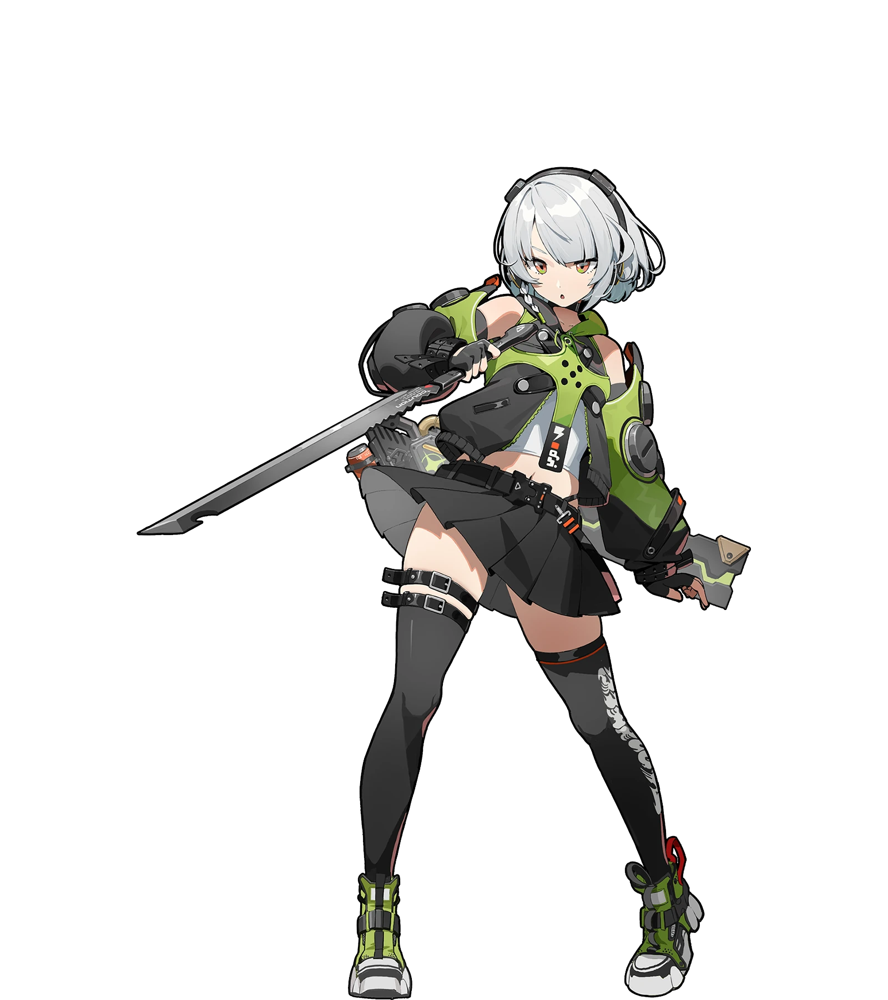

先收录
把公开资料整理成结构化档案，每条都能追到出处。
原型样本 / 仅供挑选 / 不影响正式页面
这一页把每种美术手法都做成了能看能玩的实物。往下滚，每一块都有一句大白话解释、一个真实演示，以及做这件事大概要花多少功夫。 能对比的地方都摆成左右两栏：左边是「加了这个效果」，右边是「没加」，差别一眼就能看出来。看完在心里挑几条，告诉我就行。
那些拿设计奖的网站有个共同点：它们靠的是一个招牌瞬间，而不是二十个特效堆在一起。 用户记住的永远是那一下「哇」，剩下的都只是让页面不显廉价的底子。特效越多，反而越像模板。
所以下面十六条不是让你全选。建议的做法是：挑一条当招牌，重点打磨；其余的只做到不出错。
我推荐的招牌方案是这个组合：
这两条合起来，就是「进站第一屏，一张满屏立绘立在那里，鼠标一动整个画面就有了纵深」。 成本可控，效果集中，只做首页一处，而且不抢用户的滚动权：想往下看随时能走。
把方方正正的块和标签都斜着切一刀，变成平行四边形。整个页面立刻从「文档」变成「游戏界面」，这是绝区零官网最核心的一招。
在每个板块的角上压一个超大的数字，做得很淡，像背景纹样。它不抢戏，但会让人下意识觉得「这一页是精心排过的」。搭配「中文名 + 英文名 + 两位编号」三行结构。
收录每位代理人的属性、阵营、技能与故事线索。
收录每位代理人的属性、阵营、技能与故事线索。
整页几乎不用彩色，只在最关键的一处点一笔荧光绿。颜色越少，那一笔就越亮眼。反过来，到处都是亮色的时候，等于哪里都不亮。
只有「当前页」用了 rgb(216,250,0)，视线自动落在它上面。
五个都在喊，反而不知道该看哪个。
同一张立绘，铺满整屏和缩在小框里，感觉完全不是一个档次。这条几乎不花什么功夫，却是提升观感最直接的一步。

做成电视换台锁信号的样子：滚到这一块时，每个栏目先是一片抖动的花屏雪花、文字被横向拉宽看不清，接着一道亮带扫过，信号锁住，文字才从噪点里浮出来变清晰。四个栏目一台一台依次锁定，不是整块一起「啪」地出现。和第 20 条的信号缓冲是同一套语言。
上一条「依次入场」的升级版。一排栏目横着摆开，鼠标划过去的时候，离鼠标最近的那一格最大，两边依次变小，像手指划过钢琴键一样推出一道波浪。手不动的时候整排是平的，手一动它就活了。
把鼠标在这一排上左右慢慢移动，注意最大的那一格会跟着走。用键盘 Tab 也能逐格点亮。
同样十二格，鼠标经过没有任何反应，只能靠点进去才知道选中了哪个。
这个思路可以搬到这些地方：首页的栏目入口条（一排大字栏目，鼠标划过像琴键起伏）、角色名录的横向滚动条（几十个代理人头像，靠近的那几个自动放大好认）、影像页的缩略图轮播（不用点就能预览到哪一张）。同一套算法换个外壳就能复用，不用重做。
细细的边框、四个角上的小装饰、圆头胶囊标签，看起来像游戏里的信息面板而不是网页表格。特别适合角色页的属性区。
攻击 78 / 生命 54 / 防御 36 / 异常掌控 66
类型：强攻 · 属性：物理 · 等级：S 级 · 阵营：白祇重工
标题不是整句一起出现，而是一个字一个字错开着浮上来，像有人正在把它写出来。用在首屏大标题上最有效，别处用会显得啰嗦。
HOLLOW ZERO / 零号空洞
HOLLOW ZERO / 零号空洞
画面被拆成四层叠在一起：最后面是影画背景，中间是一层光，前面是角色立绘，最前面是文字。鼠标在上面移动时，四层跟着走的距离不一样，越靠前走得越多，最前面的文字还往反方向轻轻挪，看起来就像画面真的有厚度。角色立绘还会跟着鼠标做很小幅度的倾斜。页面滚动完全不受干扰，想往下看随时能走。


白祇重工 · 电属性 · 击破
和旧版的区别：旧版靠「把页面钉住」来讲故事，用户想往下看走不了，是在抢用户的操作权。这一版改成鼠标驱动，不接管滚动，不锁位置，鼠标不动画面就静止，效果只在用户主动动鼠标时出现。
默认滚动是一格一格跳的，带惯性的滚动会滑过去再缓缓停下。这是那种说不出哪里好但一用就上瘾的细节。下面两个框都可以用鼠标滚轮试。
把鼠标放到这个框里滚一下，内容会滑过去再缓缓停住，不是硬邦邦地跳一格。
这种减速曲线让整站显得更贵，也更容易让人一直往下看。
代价是要接管浏览器默认滚动，做得不好会和触摸板、无障碍工具打架，所以要留开关。
惯性滚动最适合内容型长页面：档案列表、剧情时间线、角色图鉴。
如果用户系统开了「减少动态效果」，这一条要自动关掉。
滚到底了。往回滚也是同样的减速手感。
同样滚一下，这个框是浏览器默认行为，一格一格地跳。
没什么错，只是显得普通。
好处是零成本、零风险，什么设备什么辅助工具都不会出问题。
如果不做惯性，页面观感的重点就要放在别处，比如大图和排版。
这里也是同样长度的内容，方便你直接对比手感。
滚到底了。
鼠标还没碰到按钮，按钮就已经轻轻朝你的鼠标偏过来一点，像被磁铁吸住。点击变得特别有反馈感。把鼠标在下面两个框里慢慢移动感受一下。
往下滚的时候卡片不是滑走，而是一张压着一张往上堆起来，后面的略微缩小往后退。适合几步流程或几条卖点的场合。
把公开资料整理成结构化档案，每条都能追到出处。
把代理人、阵营、任务互相关联，形成可以顺着走的线。
用游戏感的界面把这些资料摆出来，好看也要好查。
版本一更新就补进来，档案是活的，不是快照。
上面四张卡片在滚动时会依次钉住并堆叠，被压住的那张会略微缩小变暗。
把系统的小箭头换成自己设计的图形，靠近可以点的东西时它会放大变形。这是最能让人觉得「这站不一般」的小动作之一。
整页底色会随着你滚到不同区块而慢慢变化。深色站里幅度很小，你不会注意到它在变，但会觉得页面「有层次」。这一整页正在演示这个效果。
—
在整页上铺一层极淡的颗粒和横线，像老录像带或 CRT 屏幕的画面。它让纯色块不那么「平」，画面看着更有材质。
颗粒和横线都压得很淡，凑近才看得出来，但整块画面不再是死板的纯色。
同一块区域不加任何质感，干净但略显廉价，尤其在大面积深色上。
点了链接以后不是白屏一下再刷出新页，而是旧内容退场、一道光扫过、新内容接上，全程不断。下面用两块假页面演示，不会真的跳转。
这是「首页」。点下面的按钮切到角色页，注意画面是连着走的，没有白屏。
这是「角色页」。刚才那一下就是转场：旧内容上移淡出，一道荧光扫过，新内容托上来。
同样两块内容，但切换时中间会闪一下空白，像每次都重新加载。
刚才那一下白闪，就是现在多数站点的默认体验。
点左边的小图，这张图会自己放大、飞到右边的大图位置上，而不是「小图消失、大图出现」。用户的视线一路被带着走，不会丢。
把「网站是活的」这件事拆成四个具体动作：卡片朝鼠标歪过去并有一道光扫过、按钮被吸过来还发亮、图片经过时边缘出现极淡的红蓝错位、链接下划线从鼠标进来的那一侧展开。统一原则是鼠标不动时页面完全静止，鼠标一动处处有回应，不做自动播放的动画去干扰阅读。
把鼠标放到这张卡片上慢慢画圈，卡片会朝鼠标那侧歪过去，同时有一道亮斑跟着鼠标位置移动。
HOVER ME同一张卡片，鼠标经过没有任何回应，只能靠边框颜色变化知道自己指到了它。
HOVER ME
从左边划进去，线从左往右长；从右边划进去，线从右往左长。
不管从哪边进来都从左边长起，手感和视线方向对不上。
大图配一条斜着切开的缩略图条，点缩略图主图跟着换，主图划动缩略图也跟着走。缩略图条整体往左斜 25.3 度，每张图自己再斜回来，所以图片本身不歪、只有边框是平行四边形，这就是绝区零官网那条缩略图带的做法。方向键左右可以直接切换，不用鼠标也能操作。这一块是规范第 4.2 节「斜切几何 + 轮播」的实装样本，用的是真实 Swiper 库的 thumbs 联动模式。
 03
031 / 4 张，也可以用键盘左右方向键。
缩略图条的斜切用的是两层反向 skew：外壳斜过去决定形状，里面的图斜回来保证不变形。这一招同样适用于按钮、标签、进度条，是规范第 4.2 节里成本最低、辨识度最高的一条。
换页的那一下不留白屏，做成老电视失去信号又重新接上的样子：先闪一道彩条，画面立刻被雪花盖住，中间有横向撕裂错位、还有一条亮带从上往下滚过（就是电视场同步没锁住的那种感觉），雪花最浓的时候悄悄把新页面换好，最后雪花退去、扫描线收掉，画面重新锁定。全程 760 毫秒，再长就烦了。雪花、彩条、扫描线、撕裂全是纯 CSS 画的，没有用图片，整段由 GSAP timeline 编排。下面是两块假页面在原地互相切换，不会真的跳转。
这是「首页」。点下面的按钮切到角色页，注意那一下的雪花、彩条和滚过的亮带。
这是「角色页」。刚才那一下就是信号缓冲：彩条闪断、雪花盖住、亮带滚过、重新锁定。
PAGE A
正式接入时的做法：点击站内链接后先拦住跳转播「信号中断」（彩条闪断加雪花盖住），新页面加载完成再播「重新锁定」（雪花退去），中间雪花最浓的那段正好盖住真实的加载空档——网速慢就多缓冲一会儿，这一点比胶片过带更合理，因为「信号在缓冲」本身就是等待的合理解释。这条在规范里属于「后期再说」的第 15 条，本样本只用来确认视觉方向，不代表现在就要做。
把音乐播放器做成一台真实存在过的随身听：1979 年索尼 TPS-L2，也就是第一代 Walkman。 它的辨识点全部还原了——正面半透明窗能看见里面的磁带在转、顶部两个耳机孔（当年设计成两人可以一起听）、 机身右侧一条竖向铝合金饰条、以及那颗橙色 HOT LINE 按钮（按住会压低音乐、让两个人不用摘耳机就能说话）。 机身塑料的颜色跟着你选的角色变，用的是角色影画上那个大号招牌字母的颜色，所以每个角色的机器颜色都明显不一样。 机器就停在屏幕右下角，往下滚也一直在那，不挡内容。
这一版刻意把中文标签几乎全删了。原来那个播放器有五处中文字（「音乐播放器（可选）」「NOW ON TAPE」「未选择音乐」「顺序」「歌单」），
字一多就显得像后台工具、没有质感。现在改成只留曲名一行文字，其余全靠图形表达：三角是播放、两竖是暂停、双三角是切歌、循环箭头是播放模式。
语义没丢——每个按钮都带 aria-label，读屏软件照样念得出来，键盘也能逐个 Tab 过去操作。
商标合规：本站是粉丝非官方站，所以机身上原本印 SONY 的位置改印了 HOOXI， 原本印 WALKMAN 型号条的位置改印 ZZZ ARCHIVE，排版位置与字重保持一致。 这是向 TPS-L2 工业设计致敬，商标字样已全部替换，不是仿冒商品。
当前机身取色：照
机身塑料跟角色色走，但铝条永远是银灰的（金属就该是金属）， HOT LINE 钮永远是橙的（这是 TPS-L2 的标志，跟着变色就认不出来了）。 磁带卷芯用的是角色色压暗后的版本。
取色直接读现成的 window.agentXray，共 57 个角色，用的是
l 字段（影画上大号彩色英文字母的颜色），不是 c 字段。
原因是实测过：c 被统一抬亮过，57 个角色的第一位几乎都是 210，做出来的机器会长得差不多；
l 的差异一眼就能看出来。l 有 56/57 的覆盖率，缺的那一个（remielle）
会自动回落到 TPS-L2 原型的那个蓝色，不会崩——最后一颗按钮就是用来看这个降级效果的。
关于「全站每一页都能看到它在播」：现在的实际情况是，正式站的播放器只存在于首页 index.html， 其余七个页面（stories / character / faction / mainline / events / behind-scenes / cultivate）根本没有播放器。这是一个真实缺口。 三种补法：
zzz-player.js），八个页面底部各引一行，DOM 由 JS 注入，
不用维护八份重复 HTML。播放位置与曲目索引存 sessionStorage，跳到新页面后从上次的位置接着放。
必须说清的局限：传统多页站每次跳转都是整页重新加载，音频一定会中断重播，做不到真正的连续播放。
记住进度只是让体验接近连续，严格讲那是「断掉之后重连」，中间会有一下停顿。
BroadcastChannel 在多个标签页之间同步播放状态。这能解决「开两个标签」的场景，
但同一个标签内部跳转照样会中断，不解决主要问题。
结论：先上做法 A，成本最低、八页立刻都有播放器；想要真正无缝续播必须走做法 B，那是另一个量级的改造，建议单独立项再谈。